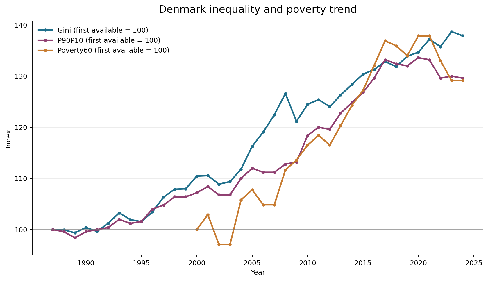
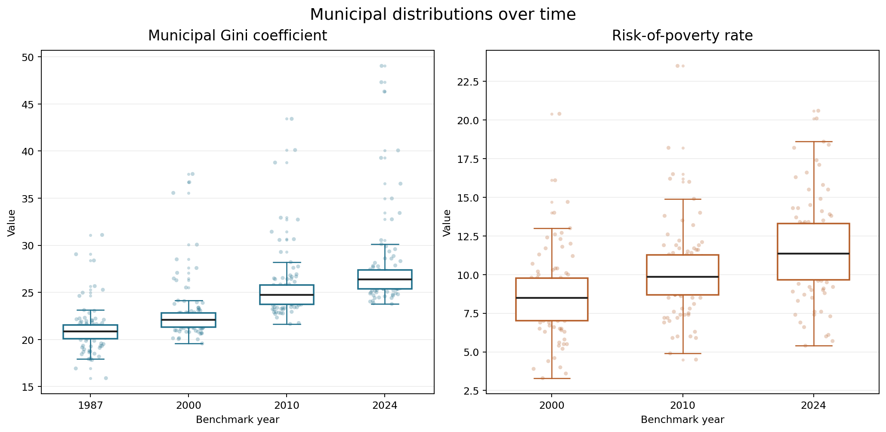
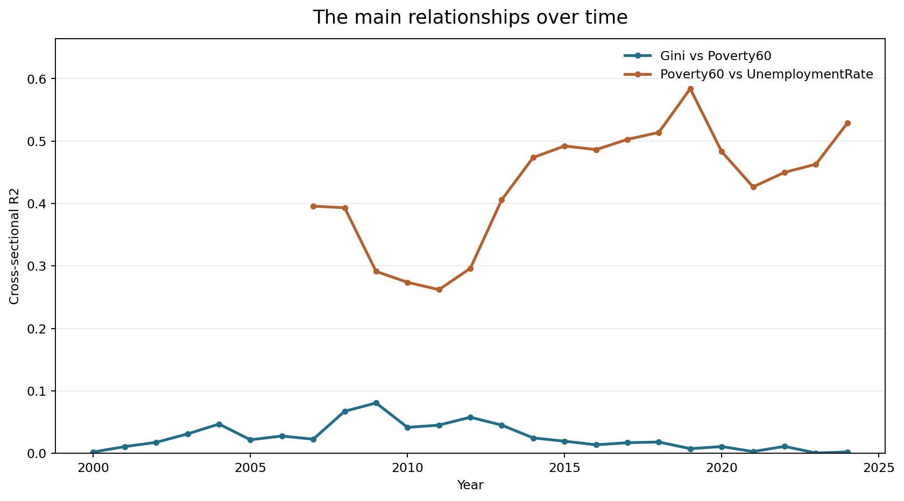

The question
We ask how unequal Danish municipalities are, how that has changed over time, and whether inequality points to the same places as poverty and unemployment. The pattern is more nuanced than one map or national trend line can show. Inequality and hardship overlap in some municipalities, but they often do not.
The data comes from official Statistics Denmark StatBank tables for inequality, decile incomes, poverty, unemployment, education, life expectancy, and housing tenure.
We use a municipality-year panel covering 98 Danish municipalities plus a national benchmark. The shared income panel runs from 1987 to 2024, the poverty series begins in 2000, and monthly unemployment is averaged into annual municipal rates. Housing tenure is matched only by the same municipality-year, so newer 2026 housing observations are not carried back into the 2024 income panel. These are descriptive results; we do not draw causal conclusions.
GiniA 0 to 100 income-inequality measure based on equivalized disposable income. Higher values mean incomes are more spread out.
P90/P10The income near the top of the distribution divided by income near the bottom, using the 90th and 10th percentiles.
Poverty60The share of people in families below 60 percent of the national median income in the StatBank risk-of-poverty table.
UnemploymentThe unemployed share of the labor force, averaged across monthly municipal observations.
OwnerShareThe share of owner-occupied dwellings among dwellings with a known owner or tenant tenure status.
National inequality has risen
The story starts nationally. Gini, P90/P10, and the 60 percent risk-of-poverty rate are indexed to their first available observations, so indicators with different units can be read on one scale.
The increase is not just visible in the national lines. In the municipal panel behind the site, the median municipal Gini rises from 20.88 in 1987 to 26.40 in 2024, while the median Poverty60 rate rises from 8.50 in 2000 to 11.35 in 2024. In other words, the national rise is mirrored by a higher and broader local distribution, not only by a few outlier municipalities.

The municipal distribution moved too
A national line hides whether change is broad-based or concentrated in a few places. The distribution view shows every municipality at benchmark years, with the box marking the middle half of municipalities.
Municipal Gini values shift upward over the period, while poverty also remains uneven across places.

Inequality is geographical
The map shifts from distribution to place. It shows how municipal Gini values vary across geography and time, with the slider available for earlier years. Geography matters, but the map cannot carry the argument by itself because maps are better at showing location than exact ranking.
Figure 3. Plotly choropleth of municipal income inequality from 1987 to 2024, opening on 2024. Source: Dataforsyningen municipality boundaries and Statistics Denmark StatBank table IFOR41.
The high-inequality list is not the high-poverty list
The ranked comparison makes the key contrast explicit. Some municipalities with very high Gini have relatively low poverty and unemployment, while several high-poverty municipalities sit closer to the middle of the Gini distribution.
The contrast is clearest in the 2024 rankings. Gentofte (Gini 49.04, Poverty60 9.6%, unemployment 2.33%) and Rudersdal (47.31, 7.6%, 1.97%) sit at the top of the inequality list, while Copenhagen and Aarhus combine high poverty with lower Gini values, and municipalities such as Lolland and Ishøj show substantial hardship without extreme inequality. The notebook's latest-year checks point in the same direction: Gini and Poverty60 are nearly unrelated across municipalities (R² = 0.002), while Poverty60 and unemployment move together strongly (R² = 0.529).
| Municipality | Gini | Poverty60 | Unemployment | Story role |
|---|---|---|---|---|
| Gentofte | 49.04 | 9.6% | 2.33% | High inequality, lower hardship |
| Copenhagen | 34.97 | 20.6% | 3.58% | High inequality and high hardship |
| Lolland | 26.45 | 18.2% | 3.48% | Lower inequality, high hardship |
| Hørsholm | 40.07 | 7.3% | 2.15% | High inequality, low poverty |
Figure 4. Latest-year ranked comparison of municipalities with the highest Gini and highest Poverty60 values. Bar color shows unemployment, adding hardship context without treating it as a causal result. Source: Statistics Denmark StatBank tables IFOR41, IFOR12P, and AUP02.
Housing gives the split a structure
Housing tenure helps connect the ranked contrast to a material local structure. In 2024, owner-occupied dwellings make up only 19.3 percent of known-tenure dwellings in Copenhagen and 22.7 percent in Frederiksberg, while the median municipality is 58.1 percent owner-occupied and Lejre reaches 75.9 percent.
The relationship is meaningful but not complete. Across municipalities, OwnerShare is negatively associated with Poverty60 (R² = 0.304) and unemployment (R² = 0.220), while the OwnerShare-Gini relationship is much weaker (R² = 0.029). That fits the red thread: tenure helps explain where hardship concentrates, but Gini still captures a different distributional shape.
Figure 5. Owner-occupied dwelling share by municipality and its relationship to Poverty60 in 2024. The scatter colors points by unemployment and includes a fitted line for the descriptive cross-sectional relationship. Source: Statistics Denmark StatBank tables BOL101, IFOR12P, AUP02, and IFOR41.
Poverty and unemployment move together
The next chart shows the clearest latest-year hardship relationship. Municipalities with higher risk-of-poverty rates also tend to have higher unemployment. In 2024, the fitted line explains about 53 percent of the cross-municipality variation in unemployment.
By contrast, the latest municipal Gini-poverty relationship is basically flat, with an R² close to zero. This is why Gini is useful for inequality but not enough for local hardship.
Figure 6. Each point is a municipality in 2024. The fitted line reports the average cross-sectional relationship in the latest complete year; it should not be interpreted as a causal estimate. Source: Statistics Denmark StatBank tables IFOR12P, AUP02, and IFOR41.
The contrast is not only about 2024
The robustness check repeats the same cross-sectional comparison year by year. The Gini-poverty relationship stays weak across the shared municipal panel, while the poverty-unemployment relationship is consistently stronger in the years where both measures are available.
This does not prove a causal pathway. It does show that the main contrast is not driven only by the 2024 endpoint.

What to take from it
Inequality rose, but unevenly.The national trend is upward, and the municipal distribution shows that local spread matters.
Hardship clusters differently.High-poverty municipalities are often more renter-heavy, while high Gini places are not automatically high-hardship places.
Housing helps, but descriptively.Tenure clarifies the split without proving that housing composition causes poverty or unemployment.
Limits
The merged panel ends in 2024 because the income inequality and poverty tables end in 2024. Monthly unemployment and education may have newer observations in the raw source systems, but using them would not extend the complete income-poverty panel used here.
Life expectancy is measured over rolling periods and is more volatile in small municipalities. The 2024 merged panel is missing life expectancy for four small island municipalities: Ærø, Fanø, Samsø, and Læsø. StatBank also reports one implausible S80/S20 value: Rudersdal has a negative value in 1994. We flag it and do not base any argument on it.
BOL101 housing tenure is available for 2010-2020 and 2023-2026 in the current extract; 2021 and 2022 are closed in the source because of BBR data errors. We match housing only by the same municipality-year and do not add a housing-cost proxy, because a robust municipal cost series is outside this descriptive scope.
References
- Statistics Denmark. (n.d.). Income distribution on equivalised disposable income (IFOR41) [Data set]. StatBank Denmark. Retrieved May 12, 2026, from https://www.statbank.dk/IFOR41
- Statistics Denmark. (n.d.). Average equivalised disposable income by decile (IFOR32) [Data set]. StatBank Denmark. Retrieved May 12, 2026, from https://www.statbank.dk/IFOR32
- Statistics Denmark. (n.d.). Persons in risk-of-poverty families (IFOR12P) [Data set]. StatBank Denmark. Retrieved May 12, 2026, from https://www.statbank.dk/IFOR12P
- Statistics Denmark. (n.d.). Unemployed in percent of the labour force (AUP02) [Data set]. StatBank Denmark. Retrieved May 12, 2026, from https://www.statbank.dk/AUP02
- Statistics Denmark. (n.d.). Educational attainment (HFUDD11) [Data set]. StatBank Denmark. Retrieved May 12, 2026, from https://www.statbank.dk/HFUDD11
- Statistics Denmark. (n.d.). Life expectancy for newborn babies (HISBK) [Data set]. StatBank Denmark. Retrieved May 12, 2026, from https://www.statbank.dk/HISBK
- Statistics Denmark. (n.d.). Dwellings (BOL101) [Data set]. StatBank Denmark. Retrieved May 13, 2026, from https://www.statbank.dk/BOL101
- Dataforsyningen. (n.d.). Kommuner [GeoJSON data set]. Retrieved May 12, 2026, from https://api.dataforsyningen.dk/kommuner?format=geojson
- Segel, E., & Heer, J. (2010). Narrative visualization: Telling stories with data. IEEE Transactions on Visualization and Computer Graphics, 16(6), 1139-1148. https://doi.org/10.1109/TVCG.2010.179